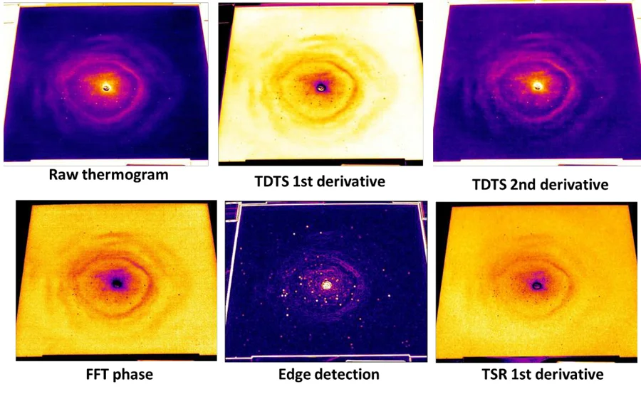

Infrared non-destructive testing
Revealing gunshot residue
Can thermal imaging reveal gunshot residue without touching or damaging the evidence? We investigate flash-pulse thermography to map residue around bullet holes in fabrics. Quantitative image analysis helps distinguish residue indications and describe their spatial distribution, supporting research into shooting-distance estimation.
Related paper ↗